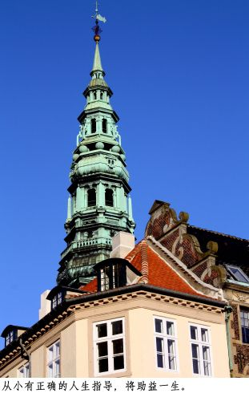

自然的生活 平安的11月
文/图：刘莎伦
问：Sandy台风很多人家中没有电，没有网络……很无聊，甚至认为没有电活不下去。妳怎么度过这一周？
答：我喜欢安静，几个月不出家门对我没有问题，何况有很多事要做：办公事务、paper work、写见证、读圣经、祷告、家里很淩乱也得整理……
问：台风没有电，妳会不会觉得等待是很折磨人的事？
答：我也很烦等待，但有时候的等待是必须的，也是需要学习的。在折磨、吞食人的煎熬里沈默、沈静、沈思。无法想象有些人冲过来冲过去，好像事业做得很大，哪里有时间让心灵沈静、沈淀和净化？很久以来，我学习在排队等待时，在心理面祷告与神亲近，在塞车的长列里，听圣歌敬拜主……儿子小时候自编自导一个全美得奖的电影，片名叫“等待”，给我很多启发：等待可以如此甯静、坚忍、温柔，带一点凄凉、孤独和享受……
问：妳如何让心灵保持甯静？
答：生活和工作中很多烦人的事，永远做不完，没晚没了，特別我这种“完美主义者”，总是无法自我满足，永远能找出缺点和不足，精神有时很疲惫。但无论如何，一定要腾出时间在后院走走，看看花，松松土，面对夕阳的小河，斑斓的河面闪耀，倾听水流的声音，是很大的享受，而且我可以祷告。
问：很多人认为要赚很多钱才是成功的人生，妳如何看待？
答：走过千山万水，我早已回归大自然，以前的人不用什么精品物质，也活得好好的，我为什么不能？如果世界经济大崩盘、银行倒闭、工厂关门……只要有一块地就可以活下去。上帝让天下雨，让阳光照耀，使土壤肥沃……这一切都是生命的基本，原本就不需要追求过多。无论赚多少钱，只是一张干净的床，吃的只能是蔬菜豆腐，否则对身体不好。而且我极喜爱自然的东西：原木、石头、麻、棉……四处都可以捡到。有一次，学生在路边拾到一张椅子给我，我好喜欢！
我认识一些很聪明的人，甚至是天才，他们是人中之人，精英中的精英，放弃原有的名利、地位和金钱，自得其乐。有个人躲到山上去，每天散步，吃自己种的果蔬，喝喝茶…..十分惬意。活到这种境地，真是很不简单，这个世界不能理解他们，別人努力达不到的，他们却白白放弃。自称官二代、富二代，有钱人，上市公司老板，各行各业的名流贵人淑女，妳们是无法体验他们的境界的。如果妳还在商界打滚，妳以为妳还可以再往上爬，相形之下，妳是俗人、庸人，但不是聪明人。
我并非说不要工作，四体不勤，但生命的意义不在于金钱和名利的多寡。看到一些家长一门心思只教儿女出人头地，赚大钱，我真是难过！
问：那么，妳为什么鼓励学生追求最高的目标，比如上最顶尖的名校？
答：很多人忘记了，顶尖名校要培养的是有胸怀、抱负、眼界的革命性、领导型的人才，他们要领导世界，改变世界。我希望我的学生未来能对世界、社会有贡献，能帮助更多的人。如果妳是个好班长，妳能带好七个人；如果妳是个好排长，可以管好十四个人；如果妳是一个大公司的总裁，妳可以创造成千上万的工作机会；如果妳是总统，妳可以造福一个国家和后代，甚至影响世界。关键在于，妳是否有一个正确的信仰？在这个信念之下，影响妳的人民、员工、下属？
社会把重要的位置交付给妳，不是要妳耀武扬威，作威作福，而是得付出和贡献。我常想，原始社会最早的酋长是怎么产生的？应该是在紧要关头自然而然站出来敢大声说话，担起重担，带领大家的有胆有智的人，而后自然地成为酋长，并受到大家的尊敬和拥护、爱戴。而后来的“权威者”，无论是家庭中的、社会的、国家的，变成天经地义的，生来別人就是得惯著他，养著他，听命于他？他们从来没有想到，他们同时被赋予的责任，应有的魄力？
部分家长千方百计把孩子送入名校，灌输他们的却是自私、算计、清高、傲慢，甚至连基本的为人礼貌都没有。即使名校毕业，也缺乏名校毕业生应有的责任和胸襟，一样被社会拉下来。我不信没有公义和真理。
问：听说莎伦画院有校友从政。也有妳们相关企业的主管在妳们的建议鼓励下成功当选民选官员？
答：希望学生不是因为享受“统治”和控制他人的快感而从政。从政者首要有克己为人的精神。有些优秀企业家从政是可取的，如果他有更高的境界和付出精神，我看好南朝鲜现代集团继承人从政。但若从政是为了个人私心和虚荣，实在很呕！例如台湾某已故首富的长公子，若是为了从心理上报复他已故父亲对他的精神轻视，则罢了，民众会蠢到陪他一起玩？从政者要真正有建树太难了，要有智慧、使命感和力排众议的勇气和魄力。如纽约市长彭博、新州州长克里斯蒂，真正为民所想，体验民疾民苦。也会被骂，但从大局出发，即使被一些人臭骂，他们也无惧无虑。在民主社会，绝大多数政客惧怕民意和败选，而非真正为国家和民众的大局著想。而大多数选民在意眼前得利，根本不在乎大局大体和未来。政坛需要真正的强人！
对政治，我很生气，也懒得去谈论，没有能力改变什么。放弃当初一腔热情和满腔抱负，沈湎于安乐窝的政治人物比比皆是。到头来，所做作为一切仅只为了讨好民众，为了选票。

问：妳对刚结束的2012年总统大选有何看法？
答：美国人才这么多，共和党就选不出一个像样子的总统候选人来吗？（我的上司说，有能力者不屑选总统）想想，已故总统肯尼迪的儿子飞机失事去世后，党内元老只好推举肯尼迪的女儿出来选什么议员。可怜该女子只会说：“You know……”后来看她实在扶不起来才不了了之，否则还不是先把出身摆在第一，从权贵自己身边的亲朋好友挑起。平民百姓如果又非名牌大学出身，何来的能力制胜？难怪平民百姓争破头也要挤进名校，以改变血统，至少也得不计手段捞钱，有钱可以左右权力，像犹太人一样……归根到底是，人没有信仰，或信仰不坚定，而没有安全感。
问：我觉得妳是个性情中人……
答：身为基督徒本不应该恼怒，但基督徒并非是非不分，不温不火，任人摆布，一巴掌打下去还不敢叫疼。
问：妳是否个性比较大胆，特立独行，很有勇气？
答：我先生的家族是上帝特別拣选的祭司家族，已是第6代。上帝通过这个家族改变了很多人，甚至是国家和整个地区。这份荣耀让我很感动。他们的谦卑、温顺、忍耐、低调、高贵、儒雅……一切传统基督徒最典型的明显特质都让我敬重，我真的没法子变成这种谦谦君子和淑女。但是，他们同样要面对很多试探，若是错失灵命的考验，很多问题就会产生，主,要给的更大祝福便会失去。
从我受洗之日起，主已选定我做一个争战的勇士，而非一个日益安于现状的基督徒，不管別人如何看我，要说、要讲、要传、要做！没有羞愧。同时我也领受上帝原本要给我公公的更多的使命与祝福，这种传承，乃至在莎伦画院代代传承下去，都是上帝的恩典。我知道我的勇气从哪里来。
问：莎伦画院的发展和妳的人生价值观是否有矛盾？
答：莎伦画院的老板是上帝！我们只是管家。我也曾跟上帝说：“主啊，够了吧？我做不下去了。”但是主不但又给我们更多的工作，而且添加给我们更大的能力，对我这样一个平凡的弱女子，真是奇迹。
我们不要自己要什么，计划什么。时候到了，主一一为我们打开门，让我们知道下一步做什么，从哪里开始。不是我们强求的，所以可以保持平凡的心态。
问：莎伦画院想必赚了不少钱，妳的娱乐是什么？
答：因为自我要求精益求精，投入太多，十几年来，至今都还在创业，没有什么利润。我每天24小时都在工作（连睡觉都梦到工作）几乎不逛街不购物，已经十几年没有去mall。生活花费很少，有时喝咖啡、喝红酒、看看书、听音乐、散散步、拍照片、旅行……只要能让我一个人安静呆著就好。
问：除了教学还有什么可忙的呢？
答：每件事，如果要做得更好，不断突破自己，精益求精，事情必多到连做梦都在工作。远的不提，目前在申请大学最后冲刺，每年总会有学生突然放弃，不干了，家长急到跳脚，求助于我们。这种心理辅导工作一做起来是几天几夜，几个月的事……每周都有开不完的会，沟通、辅助、训练……从每个细节的不断修正到大方向的制定……
问：这样工作的目的是什么呢？
答：工作的成就感中，我们体会到人生的价值感，对他人有帮助。通过教育，传达我们的理想观念，可以影响下一代，进而改变社会。
问：莎伦画院的接班人是否也有这种理念？
答：甯可不发展，也不可失去创办的宗旨和理想。这几年，年轻团队的工作量越来越大，主要是他们在管理和运作，事实证明他们做得很好，发扬光大。
问：年轻人是否会经验不足？
答：我们以15年时间在训练接班团队，选太子也不过就这样了。谁让我们有这么高的眼光和要求呢？
问：为何有这么高的要求？
答：因为別人看不到的，我们看到了，无论是教学或管理，上帝赐给我们特別的慧眼。
问：莎伦画院培养的是否都是出身名校的年轻人？
答：最重要的是正直、诚实、有自律。若有这种美德，即使出身社区学院、普通大学，我们也有信心把他们训练成为一流的老师和领导者。
莎伦画院不仅仅是教育绘画的学校，也是上帝挑选和训练精兵的基地。我们有十足独到的眼光和训练才能“化腐朽为神奇”。
问：今年11月会不会举办恩典画展？
答：因Sandy台风后有很多收拾工作，可能会略为推迟至12月举行。
问：为什么要举办恩典画展？
答：原本想举办一场大型的基督家庭孩子们的联展，因场地问题，突然想到以小型的，每年一次推出。从基督徒学生中选出来的，都有美丽的故事和见证。但不表示没有展出的基督徒学生画的不够好或没有见证。只因以前的本意是一年只选一个人，最多两个人。但2011年开始，我们以集体小联展形式展出，依然漏掉很多基督徒学生。很高兴基督徒和愿意接受耶稣基督的学生越来越多。
问：以前，感恩节都会邀请RISD的莎伦学生回来给大家做申请建议，今年有吗？
答：现在不一定安排在感恩节。平时的申请大学相关座谈要尽量参加，以免漏掉资讯。
（2012年11月）
Copyright © 2012 www.sharronartcenter.com All works original, all rights reserved, do not plagiarize. Do not use text without permission. 版权 © 2012 www.sharronartcenter.com 所有作品皆为原创 版权所有。 盗用必究。 文字非经同意不得转载。